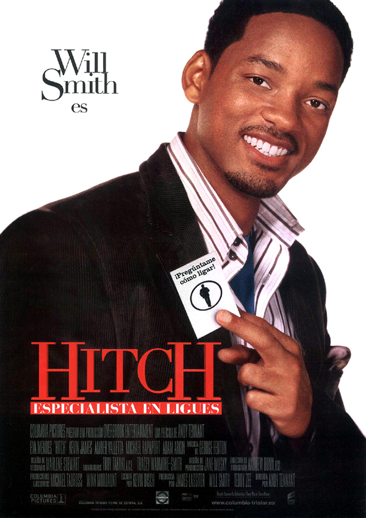

Sinópsis: Esta vez Batman (Christian Bale) asume más riesgos en su guerra contra el crimen. Con la ayuda del teniente Jim Gordon (Gary Oldman) y el nuevo y comprometido fiscal de distrito Harvey Dent (Aaron Eckhart), Batman se propone desmantelar las organizaciones criminales que infestan las calles de la Gotham City. Al principio la asociación demuestra ser efectiva, pero pronto se verán atrapados en un reino del caos desatado por una mente criminal en auge conocida por los aterrorizados habitantes de la ciudad como Joker (Heath Ledger), que introduce la anarquía en Gotham y obliga al Caballero Oscuro a cruzar aún más la fina línea que separa al héroe del justiciero.
Django
Fecha de estreno: 31 de enero 2013
Género: Acción
Duración: 170 minutos
Calificación:
Sinópsis: 'Django desencadenado' cuenta la historia de un esclavo liberado (Jamie Foxx) que sacrifica su vida al loable empeño de limpiar afrentas, vengar latigazos y liberar amadas. Si se quiere, nada que no haya hecho antes el 'western' o cualquier película de aventuras, pero, con una importante salvedad.
Iron Man
Fecha de estreno: 30 de abril 2008
Género: Acción
Duración: 126 minutos
Calificación:
Sinópsis: La película cuenta la historia de Anthony Stark, un multimillonario industrial y genio inventor, que es secuestrado y obligado a construir un arma devastadora. En su lugar, utilizando su inteligencia e ingenio, Anthony construye una armadura de alta tecnología y escapa de su cautiverio.
El lobo de Wall Street
Fecha de estreno: 2 de enero 2014
Género: Comedia
Duración: 180 minutos
Calificación:
Sinópsis: Película basada en hechos reales del corredor de bolsa neoyorquino Jordan Belfort (Leonardo DiCaprio). A mediados de los años 80, Belfort era un joven honrado que perseguía el sueño americano, pero pronto en la agencia de valores aprendió que lo más importante no era hacer ganar a sus clientes, sino ser ambicioso y ganar una buena comisión. Su enorme éxito y fortuna le valió el mote de “El lobo de Wall Street”. Dinero. Poder. Mujeres. Drogas. Las tentaciones abundaban y el temor a la ley era irrelevante. Jordan y su manada de lobos consideraban que la discreción era una cualidad anticuada; nunca se conformaban con lo que tenían
The Joker
Fecha de estreno: 4 de octubre 2019
Género: Drama
Duración: 122 minutos
Calificación:
Sinópsis: Arthur Fleck es un payaso con una extraña enfermedad mental. Responsable del cuidado de su madre enferma, sueña con su propio espectáculo de stand up comedy. La situación no es favorable. Tanto su condición mental como su oficio lo hacen blanco frecuente de agresiones en ciudad Gótica, ciudad sumida en una profunda tensión social.
Fleck es atacado en el metro por tres jóvenes ebrios, pero esta vez, decide ser el victimario. El triple asesinato, divulgado en los medios de comunicación, genera la simpatía de los ciudadanos. Al ver cómo el caos se precipita, el político Thomas Wayne, venerado por la madre de Fleck, anuncia su candidatura a alcalde. Pero ahora que el subestimado y mentalmente enfermo Arthur Fleck ha ganado popularidad, su vida y la de ciudad Gótica dan un giro radical.
Spiderman
Fecha de estreno: 3 de mayo 2002
Género: Acción
Duración: 121 minutos
Calificación:
Sinópsis: Tras la muerte de sus padres, Peter Parker, un tímido estudiante, vive con su tía May y su tío Ben. Precisamente debido a su retraimiento no es un chico muy popular en el instituto. Un día le muerde una araña que ha sido modificada genéticamente; a la mañana siguiente, descubre estupefacto que posee la fuerza y la agilidad de ese insecto. Las aventuras del hombre araña se basan en el famoso cómic de Stan Lee y Steve Ditko.
Focus
Fecha de esterno: 5 de marzo 2015
Género: Romance, crimen
Duración: 104 minutos
Calificación:
Sinópsis: Will Smith interpreta a Nicky, un experto en las artes de la distracción que se enamora de Jess (Margot Robbie), principiante en las artes del hurto. Mientras Nicky le enseña a Jess los trucos del gremio, ella se acerca demasiado, hasta que él corta la situación de forma abrupta. Tres años después, la mujer que había encendido una llama en él (ahora convertida en una experimentada femme fatale) vuelve a aparecer para encender de nuevo la llama en Buenos Aires, en medio de un circuito de carreras de gran importancia. En medio del último y peligroso plan de Nicky, Jess logra desconcertar todos los planes de Nicky... e incluso al mismísimo Nicky.
Titanic
Fecha de esterno: 5 de febrero 1998
Género: Romance, drama
Duración: 194 minutos
Calificación:
Sinópsis: La trama, una epopeya romántica, relata la relación de Jack Dawson y Rose DeWitt Bukater, dos jóvenes que se conocen y se enamoran a bordo del transatlántico RMS Titanic en su viaje inaugural desde Southampton (Inglaterra) a Nueva York (EE. UU.) en abril de 1912.
Cruella
Fecha de esterno: 28 de mayo 2021
Género: Comedia, crimen
Duración: 134 minutos
Calificación:
Sinópsis: Decidida a convertirse en una exitosa diseñadora de moda, una joven y creativa estafadora llamada Estella se asocia con un par de ladrones para sobrevivir en las calles de Londres. Sin embargo, cuando su talento para la moda llama la atención de la legendaria diseñadora, la Baronesa von Hellman, Estella cambia el rumbo de su vida hasta que una serie de acontecimientos la llevan a asumir su lado malvado y a convertirse en la estridente y vengativa Cruella.
Contratiempo
Fecha de esterno: 6 de enero 2017
Género: Suspenso, mistero
Duración: 204 minutos
Calificación:
Sinópsis: La vida del exitoso empresario Adrián Doria se vuelve una pesadilla cuando una mañana se despierta en una habitación de hotel junto al cadáver de su amante. Él está convencido de su inocencia, pero las pruebas demuestran lo contrario. Después de que su esposa lo abandone, Adrián contrata los servicios de Virginia Goodman, la mejor preparadora de testigos del país.
Hitch

Fecha de esterno: 7 de abril 2005
Género: Romance, crimen
Duración: 104 minutos
Calificación:
Sinópsis: Después de sufrir un desengaño amoroso en su etapa universitaria, Hitch (Will Smith) decide dedicarse a ayudar a hombres que tienen problemas para conseguir a la mujer de sus sueños. Mientras ayuda al patoso Albert Brennaman (Kevin James) a conquistar a la famosa Allegra Cole (Amber Valletta), Hitch se enamora de la periodista Sara Melas (Eva Mendes), la cual quiere descubrir al Doctor Love.
Forrest Gump
Fecha de esterno: 6 de octubre 1994
Género: Comedia, drama
Duración: 142 minutos
Calificación:
Sinópsis: Forrest Gump (Tom Hanks) es un chico con deficiencias mentales no muy profundas y con alguna incapacidad motora que, a pesar de todo, llegará a convertirse, entre otras cosas, en un héroe durante la Guerra del Vietnam.